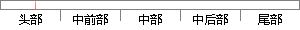

中首先提出互相关函数估计时差的方法，并证明互相关函数是时差参数的最大似然估计。
片段位置图

相似结果|
相似片段 1：[6]中首先提出用互相关函数估计时差的方法，并证明互相关函数是时差参数的最大似然估计。S.Stein则在文献[7]中首先提出了用互模糊函数估计时差频差的方法，并证明互模糊函数法是时差频差参数的最大似然
相似片段 2：和科研人员也提出了很多TDOA的估计方法。总结起来主要有：1. 利用相关法估计时差相关法是目前最为普遍的一种估计方法，对两路信号作互相关计算，当它们的互相关函数取值最大时对应的横坐标（时间点）就是TDOA
相似片段 3：应用在时差估计问题上。 3.2.1 信号模型 正是受广义互相关方法和高分辨谱估计方法的启发，本节中首先提出高分辨谱估计时差估计方法的模型，将信号转换到频域，将互相关谱估计问题转换成正弦信号的包络估计问题
相似片段 4：峰值出现偏离甚至导致时差估计出现错误。针对此，Knapp和 Carter于 1976年提出了最为经典的广义互相关时差估计方法[7]。该方法通过对互相关函数选用各种加窗函数来抑制噪声对信号的影响，进而
相似片段 5：，都展现出良好的抵抗力。 4、提出了循环互相关相位时差估计法。利用循环自相关函数以及循环互相关函数的相位差特性实现时差的确定。该方法对于相关噪声的干扰同样具有良好的抵抗性能，优于广义互相关法。 关键词
相似片段 6：在互相关函数是窄带的情况；多通道互相关系数(MCCC)估计器[7]，结合互相关函数和线性内插技术，求解接收信号间的MCCC，通过最大MCCC 值对应时刻估计时差，类似于下节将要分析的广义互相关法。由上
相似片段 7：采用找互相关函数的最大值来估计时差是最大似然估计，当观测时间“足够42第三章时差估计长”时，其均方误差(MSE)可以无限接近克拉美罗下限(CRLB)，但通常在实际应用中，这“足够长”是没有意义
相似片段 8：两种方法结合起来，就可以得到最终的时间测量结果，下面我们将分别介绍相关法和相位法的计算原理。2．1．1基于互相关函数的时差估计基于互相关函数的时差估计法，简称互相关法，其估计时差的原理在1．2．1节己用
相似片段 9：情况的TDOA估计方法。主要有：1．时差估计的相关法在时差估计的算法中，相关法是经典的时延估计方法，它利用了源信号自相关函数在自变量为0时取最大值的特点，对两个信号作互相关运算，相关函数最大值所对应的横坐标即为时差
|
※ 片段修改建议 ※
近似词参考：- 首先：起首
- 互相：相互
- 相关：相干
- 估计：估量 预计
- 方法：方式 要领 法子
- 证明：证实
- 互相：相互
- 相关：相干
- 估计：估量 预计
系统自动生成语句：中起首提出相互关函数估量时差的方式，并证实相互关函数是时差参数的最大似然估量。
注：本片段修改建议为系统自动生成，仅供参考。